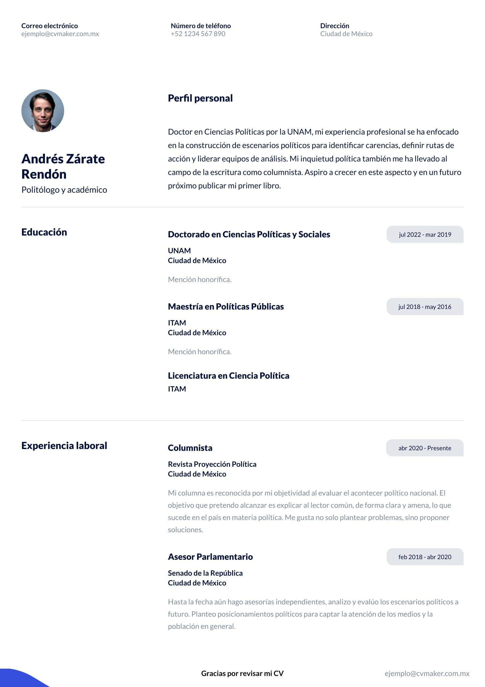
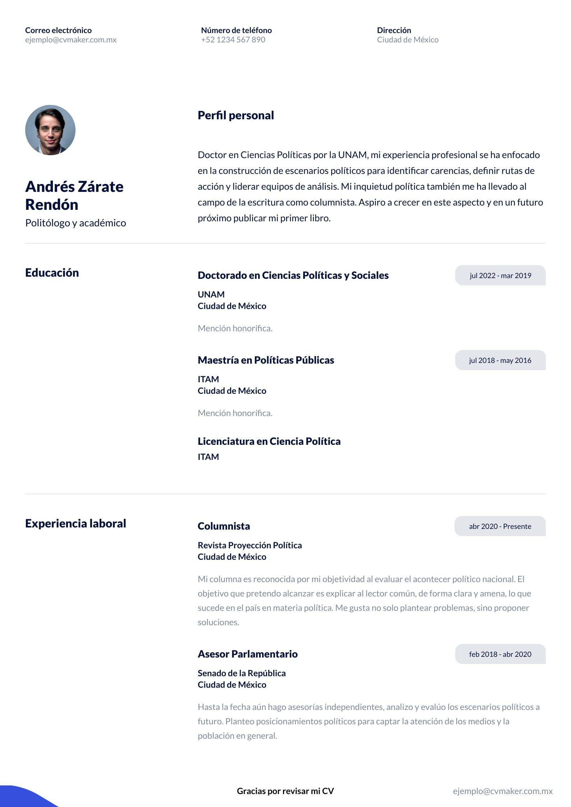

El curriculum vitae
El curriculum vitae(abreviatura: CV),es un documento con estudios, méritos, cargos, premios, experiencia laboral que ha desarrollado u obtenido una persona a lo largo de su vida laboral o académica.Se suele exigir en forma de documento para verificar la idoneidad de un candidato al optar a un puesto de trabajo. Junto a la carta de presentación, es el documento destinado a presentar en un único lugar toda la información que puede resultar relevante en un proceso de selección de personal o en una entrevista. En la gran mayoría de casos, no debe exceder una página de longitud
 

Todo sobre los CV
El termino Curriculum vitae suele aplicarse en la búsqueda de empleo. En estos casos, el aspirante a un empleo, beca o similar debe presentar un documento con todo lo que ha hecho hasta la fecha, a modo de resumen de sus méritos. Existen distintas formas de presentarlo, pero suelen incluirse los datos personales, formación académica, experiencia laboral, publicaciones y otros datos de interés como pueden ser idiomas, habilidades o competencias, siempre relacionados con el puesto al que se vaya a optar.
Estructura del CV
El tipo de hoja de vida depende de su organización y formato, ya sea en papel u otro medio. Dependiendo del modo en que se organice la información, el curriculum vitae puede ser:
- Cronológico inverso: en el que se listan datos desde el empleo más reciente hasta el más antiguo
- Funcional: en el que los datos se ordenan por bloques temáticos.
- Y Por proyectos: destaca los proyectos de la persona aspirante y las competencias que ha adquirido, siempre y cuando estén relacionadas con la oferta de empleo.
Longitud
En la mayoría de países, se recomienda que el tamaño del currículum no exceda una página, Para personas de más de 15 años de experiencia, se puede llegar a 2 páginas.
Algunas personas incluyen además una carta de motivación o de presentación, en la que explican las razones por las que han solicitado el puesto y creen que encajan mejor. Otros incluyen una carta de recomendación, en la que otra persona (generalmente, un anterior empleador) da referencias del aspirante y defiende su valía.
Contenido
El texto debe ser claro, breve y preciso, sin exageraciones ni falsedades y Tampoco deberán cometerse errores ortográficos
Normalmente se incluyen:
- Datos personales (Recomendados: nombre, teléfono, correo electrónico, ciudad. Opcional: número de identificación, estado civil, fecha de nacimiento, dirección exacta y país)
- Objetivos (opcional)
- Educación o formación (tanto formal, con título reconocido por organismos y entidades oficiales como informal)
- Experiencia laboral y resultados
- Conocimientos o destrezas
- Información adicional (relacionados con el puesto)
La fotografía es opcional y depende de cada empleador: aunque algunos la piden para conocer mejor al aspirante o para puestos de cara al público, otros la rechazan para no verse influidos por cuestiones ajenas a los méritos laborales. En caso de incluirse, se recomienda que sea a color y libre de filigranas que distraigan.
CV en linea
La popularización de internet ha propiciado el uso de redes sociales profesionales, entre ellas estan Canva o linkedin, redes o portales de empleo y de otros formatos más creativos con contenido multimedia como webs personales o videocurrículum que complementan y refuerzan la búsqueda de empleo
- Canva-Dedicado a Ayudar a la creacion de Curriculums
- Linkedin MX